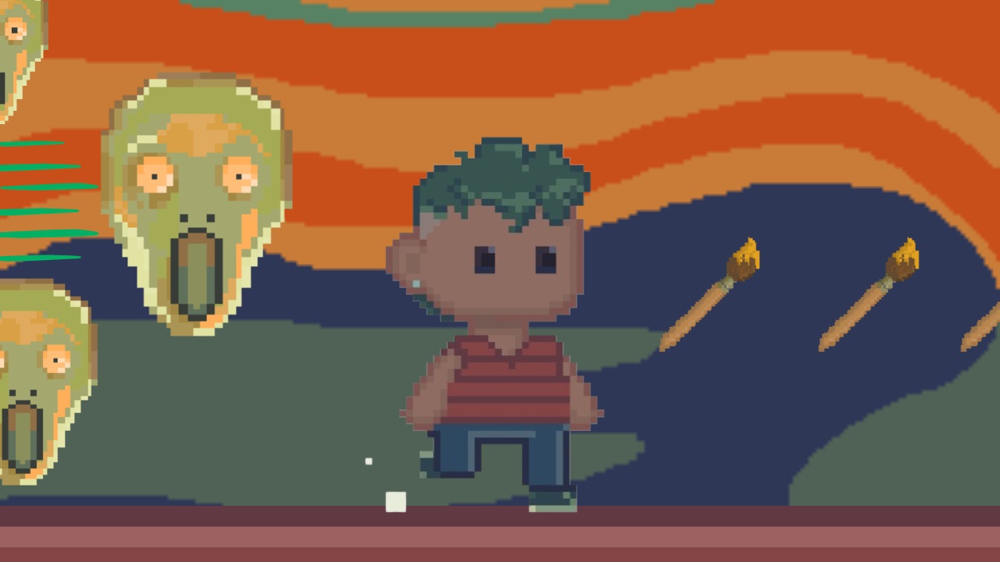

Entenda a história do jogo:Gustav pode parecer apenas um jogo de artes de coletar pincéis, mas na verdade ele tem uma história por trás, do porque que ele está naquela situação e como ele foi...ler mais |

Como 'Gustav' foi feito:Para o desenvolvimento do jogo, fui utilizado uma programação bem parecida com a de um tutorial disponibilizado pelo próprio GameMaker - programa utilizado para criar o jogo. Então não me...ler mais |

Artistas e obras que inspiraram o game:
Gustav” foi inspirado em diversos pintores famosos, começando pelo próprio nome do personagem (Gustav Portinari) homenagem a Gustav Klint e Candido Portinari. Mas quais artistas que inspiraram as três fases do jogo? Veja a...ler mais |